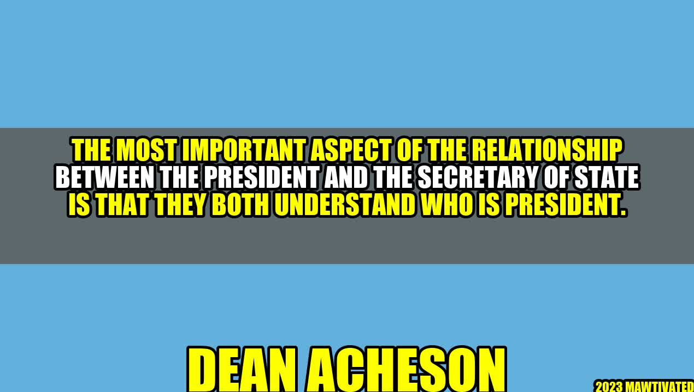

The Importance of Understanding the President: A Lesson from Dean Acheson

Imagine being asked to serve as the Secretary of State under a new president, someone you had never met before. This was the situation that Dean Acheson found himself in when Harry Truman was sworn in as the 33rd President of the United States in 1945.
As Acheson sat down with Truman for the first time, he could tell that the president was skeptical of him. Truman had not been involved in the selection process for the Cabinet and was unsure about what to expect from Acheson. But instead of being defensive or trying to assert his authority, Acheson listened carefully to Truman's concerns and questions.
Over the next few weeks, Acheson worked tirelessly to build a relationship with Truman. He made an effort to understand the president's priorities and concerns, and he went out of his way to keep Truman informed about the State Department's activities. Acheson soon earned Truman's respect and trust, and he went on to serve as Secretary of State for more than five years.
This story is a powerful example of the importance of understanding who is president when serving as Secretary of State. In this article, we will explore why this understanding is so crucial, and we will offer some practical tips for those who find themselves in this position.
Why Understanding Who Is President Matters
There are several reasons why it is essential for the Secretary of State to understand who is president:
- The president sets foreign policy priorities. As Secretary of State, your job is to carry out the president's foreign policy vision. To do that effectively, you need to understand the priorities that the president has set.
- The president is the ultimate decision-maker. While the Secretary of State has a great deal of influence over foreign policy, the president has the final say. If you don't understand the president's thinking, you may find yourself at odds with his decisions.
- The president is the face of American diplomacy. When you represent the United States abroad as Secretary of State, you are representing the president as well. To be an effective diplomat, you need to be able to convey the president's message clearly and convincingly.
Dean Acheson understood these dynamics well, and he worked hard to build a strong relationship with Truman based on mutual respect and trust.
Tips for Understanding Who Is President
If you find yourself serving as Secretary of State under a new president, there are several things you can do to build a strong working relationship:
- Listen carefully to the president's priorities and concerns. Take notes and ask questions to ensure that you understand what the president wants.
- Communicate regularly and clearly with the president. Keep him informed about what you are doing in the State Department, and be sure to seek his input and feedback.
- Be a team player. Work collaboratively with other members of the administration, including the National Security Advisor and the Secretary of Defense. Remember that everyone is working towards the same goal of keeping America safe and prosperous.
- Build relationships with foreign leaders. As Secretary of State, you will be the face of American diplomacy to the world. By building good relationships with foreign leaders, you can help further the president's foreign policy goals.
By following these tips, you can help build a strong and productive working relationship with the president, as Dean Acheson did with Harry Truman.
Conclusion: Three Key Takeaways
To sum up, here are three key takeaways:
- As Secretary of State, it is essential to understand who is president. This means understanding the president's priorities, decision-making style, and communication preferences.
- To build a strong relationship with the president, it is important to listen carefully, communicate regularly, and work collaboratively with other members of the administration.
- By understanding who is president and building a strong working relationship with him, Secretary of State can help further the president's foreign policy priorities and promote American interests around the world.
Hashtags
#SecretaryofState #President #ForeignPolicy #RelationshipBuilding #DeanAcheson
SEO Keywords
Secretary of State, President, foreign policy, relationship building, Dean Acheson
Article Category
Politics
Curated by Team Akash.Mittal.Blog
Curated by Team Akash.Mittal.Blog
Share on Twitter Share on LinkedIn